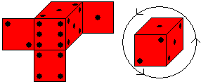
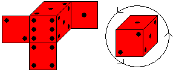

自製骰子
兩隻海狸要玩擲骰子(Yatzy)遊戲，但是需要五個骰子，他們手邊一個骰子都沒有，因此上網找到正常骰子的標示規則，準備自製五個骰子。骰子製作有兩大主要規則：
- 骰子的相對面加總一定等於7（1+6, 2+5, 3+4），如左下圖所示。
- 骰子1點、2點、3點的三個面必定相交於一個頂點，且其順序必定依逆時針方向排序，如右下圖所示。

海狸們成功的用厚紙板設計、製作了四顆骰子，四個骰子的剖面圖如下圖。
| 1 | 2 | 3 | 4 |
請問下面哪一個厚紙板剖面圖可用來製作第五顆骰子？
兩隻海狸要玩擲骰子(Yatzy)遊戲，但是需要五個骰子，他們手邊一個骰子都沒有，因此上網找到正常骰子的標示規則，準備自製五個骰子。骰子製作有兩大主要規則：

海狸們成功的用厚紙板設計、製作了四顆骰子，四個骰子的剖面圖如下圖。
| 1 | 2 | 3 | 4 |
請問下面哪一個厚紙板剖面圖可用來製作第五顆骰子？